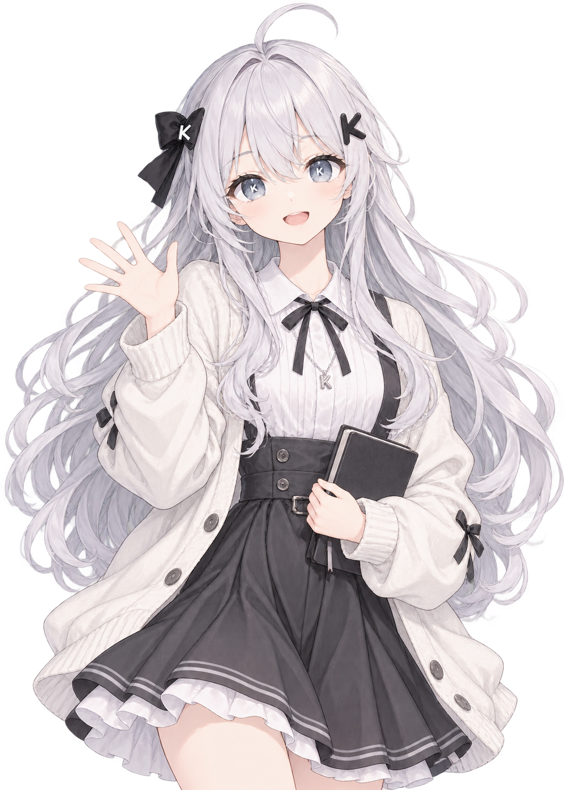
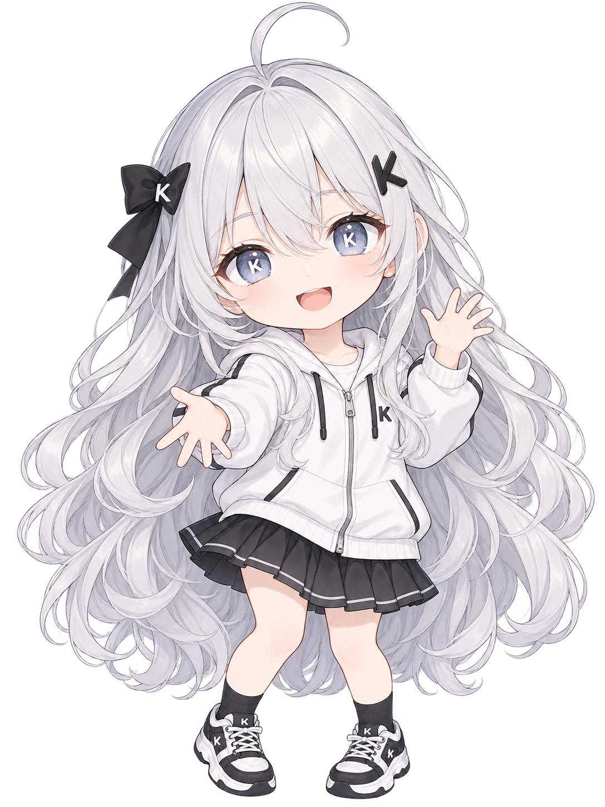

小 K 来打个招呼
欢迎来到 KFlow，
从一个小想法开始。
晒晒作品、聊聊日常，也认识一些同样喜欢创造的人。
随时从「发现 → 新手指南」再次打开
欢迎立绘 · 首页和新手指南的主视觉
约 1.7 头身，与第一版并排对比

保留原图，方便比较头部和身体比例
下载第一版大头、圆脸、小手小脚，欢迎与陪伴
下载新版透明 PNG同样的短圆比例，眨眼点赞与鼓励
下载新版透明 PNG欢迎卡片与助手状态的搭配示意
透明 PNG，可以切换深浅背景查看
银白长卷发、单根呆毛、灰蓝色眼睛中的白色 K，以及不对称的黑色发饰。正面观看时，左侧是带白 K 的黑蝴蝶结，右侧是黑色 K 发夹。服装和动作可以变化，这些识别特征持续保留。